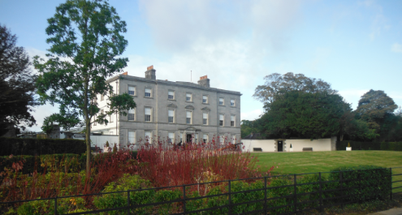

Battle of the Boyne - Oldbridge House
The Battle of the Boyne between King William III and his father-in-law, King James II, was fought on 1 July 1690 (11 July according to our modern calendar). Both kings commanded their armies in person, 36,000 on the Williamite side and 25,000 on the Jacobite side - the largest number of troops ever deployed on an Irish battlefield. At stake were the British throne, French dominance in Europe and Religious power in Ireland
The Battle of the Boyne Visitor Centre is located in the recently restored 18th century Oldbridge House, which is on the battle site. Access to the Visitor Centre includes access to the formal gardens. Access to the battle site and parklands only is Free